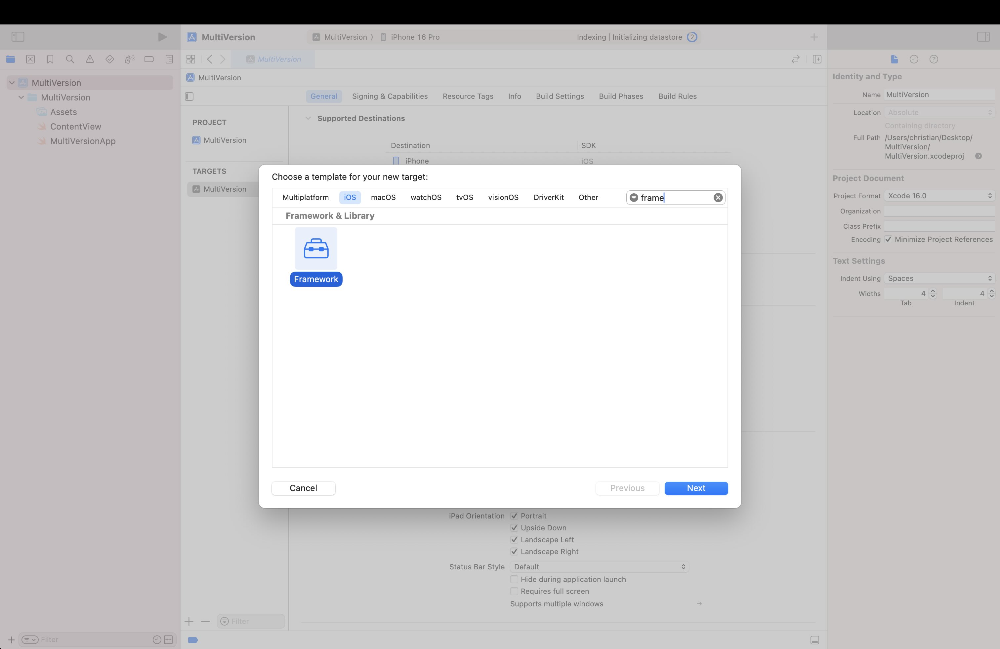
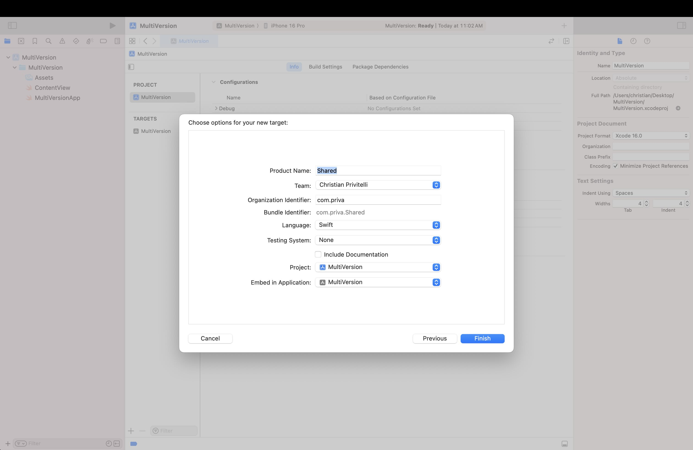
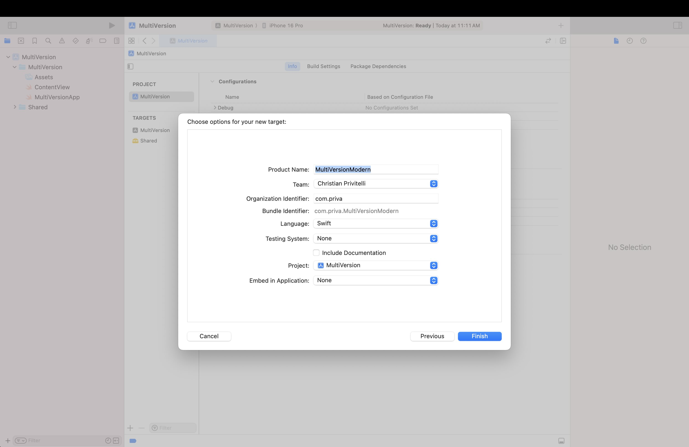

Dynamically Loading Frameworks to Support Multiple iOS Versions in the Same Bundle
If you’ve been an Apple platforms developer for a while now, there’s probably been a time when you’ve debated raising the minimum version requirement of your app so you have access to new APIs.
A few days ago I was in that situation. We’re lucky on Apple platforms that most users update to the latest OS releases very quickly—but I remembered that I promised users of my app Quanta that I would always keep the minimum requirement at iOS 15. 15 was released 4 years ago now though, and it’s time to move forward. While conditionally available APIs can work, they often clutter your codebase and can become difficult to manage as complexity grows. What should I do?
Well… dynamic frameworks was my answer, and it’s pretty simple to get working. I couldn’t find many people using them for this purpose which I found a bit odd, so that’s why I’m writing this. This dynamic loading approach allows you to seamlessly experiment with newer APIs without leaving behind users on older OS versions, and keeps your codebase clean and separated.
My goal was pretty simple: Allow users on iOS 15-16 to use the current version of my app while developing modern features for users on iOS 17-18.
Separating Out Crucial Shared Logic
You’ll probably have some shared extensions, utilities, assets and resources, API representations, etc that you want to be shared between the legacy and modern version of your app.
Create a new framework under your app target and name it something like “Shared”. Make sure Embed in Application is set to your app target.
 Now move over any resources and all your shared logic into this framework. You’ll need to make sure everything you want exposed is public, which may take some time. Approach this with a decent level of patience—it’s gonna get a little tedious. You might choose to keep your xcassets inside your main application still so that you don’t have to specify the bundle when creating images.
Creating the Legacy and Modern Code Base
Now that you’ve split out your shared logic, you’ll want to create two more frameworks—or however many you want for the different versions you want to support. Make sure when creating these, that you set Embed in Application to None! If we don’t do this, Xcode will attempt to statically link the framework incompatible with your minimum deployment target and result in a crash.
Now:
- Set your main app target's minimum version to the minimum version the entire bundle will support. In my case, iOS 15.
- Set your modern framework to the new version you want to continue development with. In my case, iOS 17.
- Set your legacy framework to the same minimum version as the minimum app target version.
Because we set Embed in Application to None, the frameworks won’t be included in your bundle whatsoever.
Add them under your main target in Build Phases and then Target Dependencies
and Embed Frameworks. Adding your frameworks under target dependencies will make sure they
are built in the same build process as your main target, but won’t explicitly link them. This is what we want.
Adding them under embed frameworks will copy the .framework file to your main bundle where we
can load them dynamically at runtime. If you run into issues, ensure Link Binary With Libraries only has your Shared framework(s)!
In order for your legacy and modern framework to access your shared code, you’ll need to add your shared frameworks under General > Frameworks and Libraries. Make sure you set Do Not Embed however, since they are already embedded in the main app, and you don’t want to duplicate symbols and resources.
Loading the Correct Framework Depending on the User's Actual iOS Version at Runtime
This is where it gets fun! At this point your main app should literally just be the entry point for your application. In my case I’m using the SwiftUI app lifecycle since it’s the most simple for this example, but it really doesn’t make a difference.
We’re going to first need to make a main bootstrap class within each of your frameworks to dynamically load the correct one for the user's iOS version. The bootstrap class acts as the entry point within each dynamic framework, responsible for initializing your app-specific content or view.
Create a main.swift file within each framework and create a class that has a function that will
return a root point of each one of your apps. Really, here you should be thinking about each one of these
frameworks as a separate application. The main target is just going to choose which one to load at runtime.
We need to return a type-erased AnyView in the case that the root of your app is SwiftUI. Otherwise,
it could be a UIViewController, or whatever you want your root to be.
import SwiftUI
@objc public class main: NSObject {
@objc public static func loadMainContent() -> Any {
return AnyView(RootView())
}
}
private struct RootView: View {
var body: some View {
Text("This is the modern framework!")
}
}In the root of your application we can finally load the framework with the magic of dlopen and
Objective-C runtime utilities!
Your frameworks may be in one of the following locations, seemingly depending on whether you’re running on device or in simulator. We try to load from the first and then the second if that fails.
Note how we change the framework name depending on your iOS version. After dlopen-ing the correct
framework, we need to fetch the main content from the bootstrap we created. We use
NSClassFromString to get the main class (make sure you prefix with the framework name here), and
NSSelectorFromString to get the loadMainContent method. Now it’s as simple as calling
it, taking the return value as AnyView and returning it.
import SwiftUI
func loadMainContent() -> AnyView {
var frameworkName = "MultiVersionLegacy"
if #available(iOS 17, *) {
frameworkName = "MultiVersionModern"
}
// potential framework location 1
var frameworkPath = Bundle.main.bundleURL
.appendingPathComponent("\(frameworkName).framework")
.appendingPathComponent(frameworkName)
.path
if dlopen(frameworkPath, RTLD_NOW) == nil {
// potential framework location 2
frameworkPath = URL(fileURLWithPath: Bundle.main.privateFrameworksPath!)
.appendingPathComponent("\(frameworkName).framework")
.appendingPathComponent(frameworkName)
.path
dlopen(frameworkPath, RTLD_NOW)
if let error = dlerror() {
print("dlopen error: \(String(cString: error))")
}
}
let bootstrapClass = NSClassFromString("\(frameworkName).main") as! NSObject.Type
let selector = NSSelectorFromString("loadMainContent")
bootstrapClass.responds(to: selector)
return bootstrapClass.perform(selector).takeUnretainedValue() as! AnyView
}
@main
struct MultiVersionApp: App {
var body: some Scene {
WindowGroup {
loadMainContent()
}
}
}Done! Now you’ll need to duplicate some code across your legacy and modern frameworks to get the app to the current state, but when you want to add new features—just use the modern framework with access to all the new APIs. Try to separate out as much critical logic as possible into your shared framework, or create more frameworks to separate out different parts of your app. Where you go from here is up to you! You could even use this to load a different version of your app depending on if the user is on iPad or iPhone. It’s probably not recommended, but technically you can load these frameworks based on any given property you can access at runtime.
Last Notes
There's a few small things to keep in mind when using this approach.
- If you take your xcassets folder out of your main app, and into the shared framework like I did, you'll miss out on the auto-generated ImageResource representations because Apple's version creates them as internal to the current module. I have a manual solution for this being a script that runs as a build phase and essentially replicates the functionality but makes them public. Will share this soon.
- If you're using Swift Packages, make sure to only link your packages to the shared framework, and the dependencies should trickle down to the other frameworks and your main app (at least in my experience).
- You might want to set Build Libraries For Distribution in Build Settings to NO
for your frameworks so you don't need to
internal importyour Swift Packages. It's actually not clear if this is a Swift 6 thing or not, but it's worth mentioning.
There's probably more to cover, but I'll leave that to you to figure out for now. Send me a message if you have any questions or feedback. @priva28_